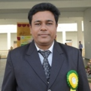

Home › profile › Personal Detail ›Experience ›Professional Membership ›Research Publications ›Awards
Dr. Shyam Sundar AgrawalProfile Dr. SHYAM SUNDAR AGRAWAL Assistant Teacher Mathematics, RANI RASHMONI HIGH SCHOOL (H.S.) 104/A S N BANERJEE ROAD, PO: ENTALLY KOLKATA-700014 (WEST BENGAL) Mob: 8389830100 Email: dr.ssagrawal@gmail.com Curriculum VitaeDr. Shyam Sundar Agrawal
Field of Specialization: Date of Birth: Present Address: M-103, VIP ENCLAVE, Present Position: Contact: ACADEMICS: B.Ed (Method Paper - Mathematics) – WBUTTEPA – 2018. Ph.D. (Mathematics) – Sambalpur University - "Neuro-Fuzzy-Genetic Alorithms Technique in Multi Criteria Decision Making" – 2008. M. Sc. (Mathematics) – School of Mathematical Science Sambalpur Univeristy– 1997. B. Sc. (PCM-Maths Hons) – Panchayat College Bargarh under Sambalpur University– 1995. +2 Sc (PCM) – Panchayat College CHSE– 1992. 10th – Town High School Bargarh under BSE Odisha– 1990. International Journals/Conferrence: 10 Nos. Work Experience...Teaching Experience1. Assistant Teacher in Mathematics from 02.11.2021 to Till Date in RANI RASHMONI HIGH SCHOOL (H.S.), KOLKATA, WEST BENGAL. 2. Assistant Teacher in Mathematics from 06.12.2013 to 01.11.2021 in Bharati Hindi Vidyalaya H.S., Siliguri, West Bengal. 3. Associate Professor in Mathematics from 28.03.2011 to 12.11.2013 in Vikash Polytechnic, Bargarh, Orissa. 4. Reader in Mathematics from 16.12.08 TO 26.03.2011 in Disha Institute of Management &Technology, Raipur, Chhatishgarh. 5. Lecturer in Mathematics from 15.09.2008 TO 15.12.2008 in O P Jindal Institute of Engineering & Technology, Raigarh, Chhatishgarh. 6. Lecturer in Mathematics from 22.10.2003 TO 13.09.2008 in Padmashree Krutartha Acharya College of Engineering, Bargarh, Orissa. 7. PGT Mathematics from 28.06.2001 TO 21.10.2003 in Guru Nanak Public School, Sambalpur, Orissa. 8. PGT Mathematics from 07.07.1999 TO 27.06.2001 in Rotary Public School, Bargarh, Orissa. 9. PGT Mathematics from 24.07.1997 TO 29.04.1999 in Jawahar Navodaya Vidyalaya Goshala, Sambalpur, Orissa. As A Resource Person1. Resource person for Maths Olympiad Training Camp, for the school students ( Garde-IX & X) of Nayagarh District at K C Club, Nayagarh from 21-05-2024 to 23-05-2024 by Subhadra Charitable Trust, Bhubaneswar, Odisha. 2. Junior Maths Olympiad Training Camp (JMO), 30th March 2024 to 31st March 2024. for the school students ( grade VI to IX) of Odisha at Cohen International School, Bhubaneswar, Odisha. 3. Students Training for RMO & JMO, 28th Dec 2023 to 29th Dec 2023 organized by NIMER, Bhubaneswar, Odisha. 4. Resource person for RURAL Mathematics Talent Search (RMTS) programme at Dunguripali, 26th to 27th December 2023 organized by DHURIAPADA ANKA FOUNDATION, Bhubaneswar, Odisha. 5. Resource person for Students Training for RMO & JMO, 1st Dec 2022 to 3rd Dec 2022 organized by AIMER, Pedapuram. 6. Resource person for Students Training for RMO & JMO, 20th Aug 2022 Organized by Sundargarh Public School, Sundargarh, Odisha. 7. Resource Person for RMO & JMO, 1st-2nd July 2022 Organized by Cohen International School, Bhubaneswar, Odisha. 8. Resource person for Teachers Training for High School Teachers, 18th – 19th Dec 2021, Organized by Institute of Mathematics, Bhubaneswar (ODISHA). 9. Resource person for Teachers Training for High School Teachers, 25th – 26th Dec 2021, Organized by Institute of Mathematics, Bhubaneswar (ODISHA). 10. Resource Person for Master Trainers Program for Teachers of Darjeeling District, 8th Aug 2020, Organized by Samagra Shiksha Mission, West Bengal. 11. District Resource Person at State Level Training, 3rd – 4th March 2020, Organized by Samagra Shiksha Mission, West Bengal. 12. Resource person for Students Training for RMO & JMO, 5th – 25th May 2019 organized by NIMER, Bhubaneswar, Odisha. 13. Students Training for RMO & JMO, 16th – 19th Oct 2018 organized by NIMER, Bhubaneswar, Odisha. 14. Resource person for Students Training for RMO & JMO, 2016 organized by NIMER, Bhubaneswar, Odisha. 15. Resource person for Master Trainers Program for School Teachers, 20th – 24th July 2009, Organized by Disha Institute of Management & Technology, Raipur(C G). 16. Resource person for Faculty Development Program for School Teachers, 23rd – 25th June 2009, Organized by Disha Institute of Management & Technology, Raipur(C G). 17. Resource person for Rural Mathematics Talent Search & Nurture Programme, 30th January– 05th February 2008 organized by Institute of Mathematics and Application Bhubaneswar, Orissa. Professional Membership1. Life Member of Koshal Creative Science & Mathematics Association, Bargarh Odisha.(L1) 2. Life Member of Indian Society for History of Mathematics.(L200). 3. Life Member of Indian Cryptology Research Society of India. (L/510). 4. Life Member of Indian Society of Industrial & Applied Mathematics. (A043). 5. Life Member of Indian Science Congress Association.(L18854). 6. Life Member of Association of Mathematics Teachers of India, Chennai. (L11108). 7. Life membership in Indian Mathematical Society (Membership No. L/040/10)- A-10-105. 8. Life membership in ISTE (Membership No. LM46581). 9. Membership in International Association of Engineers (Membership No. 106542). 10. Membership in CSTA-ACM (Membership No. 9189946). 11. Membership in International Association of Computer Science & information Technology (Membership No. 80338673). Society Membership1. Life Member of Akhil Bhartiya Agrawal Sammelan (ABAS).(LIFE Membership No. 43667). 2. Life Member Jai Maa Banbhori Parivar Siliguri, West Bengal.(LIFE Membership No. 10). Editorial Board Membership...1. Chief Editor of IJCMST - International Journal of Creative Mathematical Sciences & Technology. 2. Editorial Member of IJARST - International Journal of Advanced Research in Scince & Technology. 3. Editorial Member of IJRRWC - International Journal of Researchj & Reviews in Computer Science. Book Reviews...1. Script of Differential Equation in 2010 of Tata McGraw Hill Companies Ltd. 2. Script of Differential Equation by Richard Bronson in 2009 of Tata McGraw Hill Companies Ltd.. 3. Script of Engineering Mathematics in 2009 of Tata McGraw Hill Companies Ltd. Book Published...1. REVISED Mathematics Olympiad PROBLEM BOOK (2026). 2. Pictorial Mathematics. (2013). 3. Focus on Junior Mathematics Olympiad. (2003). Research PublicationsResearch Activity...Publication International Journals/Conferrence1. “FUZZY MULTI-CRITERIA DECISION MAKING ASSOCIATED WITH RISK AND CONFIDENCE ATTRIBUTES”, Bulletin of Electrical Engineering and Informatics, Vol. 4, 2015, No. 3 pp. 231-240. 2. “AN EFFICIENT NEURO-FUZZY-GENETICS APPROACH FOR MULTI CRITERIA DECISION MAKING”, International Journal of Hybrid Information Technology, Vol. 8, 2015, No. 5 pp. 267-272. 3. “MULTI-CRITERIA DECISSION MAKING USING GENETICS ALGORITHMIC APPROACH IN COMPUTER SIMULATION MODELS”, International Journal of Hybrid Information Technology, Vol. 8, 2015, No. 6 pp. 17-24. 4. “FORMULA FOR COUNTING SIMILAR RECTANGLES”, Elixir International Journal of Applied Mathematics, Vol. 55, 2013, No. 6 pp. 12767-12769. 5. “NUMBER OF LATTICE POINTS”, International Journal of Advanced Research in Science & Technology (IJARST), Vol. 1(1), 2012, pp. 10-13. 6. “ENHANCING THE SECURITY OF PUBLIC KEY CRYPTOSYSTEM BASED ON DLP ON 7. “AN ID-BASED PUBLIC KEY CRYPTOSYSTEM BASED INTEGER FACTORING AND DOUBLE DISCRETE LOGARITHM PROBLEM”, Information Assurance and Security Letters, Vol. 1, 2010, pp. 29-34. 8. “AN ID-BASED PUBLIC KEY CRYPTOSYSTEM BASED ON THE DOUBLE DISCRETE LOGARITHM PROBLEM”, International Journal of Computer and Network Security (IJCNS), Vol. 10, 2010, No. 7 pp. 8-13. 9. “COUNTING SIMILAR TRIANGLES”, Ohio Journal of School Mathematics Columbus, Vol 60, Fall 2009, PP 13-18. 10. “A NEW DESIGN PUBLIC KEY ENCRYPTION SCHEME BASED ON DOUBLE DISCRETE LOGARITHM PROBLEM”, International Conference on Challenges and Application of Mathematics in Science and Technology (CAMIST), NIT, Raourkela (Orissa), January 11 – 13, 2010, PP 495-502. Publication National Journals/Conferrences1. “DECISION MAKING & GOAL PROGRAMMING”, Journal of Orissa Mathematical Society, YEAR 2004-05 PP 254-258. 2. “MULTISTAGE DECISION MAKING, GOAL PROGRAMMING IN FUZZY ENVIRONMENT”, Proceedings of National Conference on Recent Advances in Computing (NCRAC’06) Coimbatore, YEAR 2006, PP 378-381 3. “A STEP TO NEURO FUZZY-GENETICS APPROACH TO MULTI CRITERIA DECISION MAKING”, Proceedings of National Conference on Applicable Mathematics (WVMC-2006), JIET, MP, YEAR 2006, PP 18-22. http://www.jiet.ac.in/Others/wmvc.php 4. “FUZZY MOMENT GENERATING FUNCTION”, in 31st Annual Conference of Orissa Mathematical Society, 2004, 7th-8th February. Conferrences/Workshps/Seminar Attended1. AI in Education: Empowering Educators for a Future Ready India, Jointly Organized by NCERT and Google for Education via DIKSHA, 2026. 2. Digital Wellness, organized by CIET-NCERT via DIKSHA, New Delhi, 2026. 3. Inclusive Education and Digital Techmology, organized by CIET-NCERT via DIKSHA, New Delhi, 2026. 4. Enhancing Mathematical Competency through AI, organized by CIET-NCERT via DIKSHA, New Delhi, 2026. 5. Online and Digital Education in the lens of NEP 2020, organized by CIET-NCERT via DIKSHA, New Delhi, 2026. 6. Robotics and AI in Education, organized by CIET-NCERT via DIKSHA, New Delhi in collaboration with Robotex India, 2026. 7. Capacity Building cum Awareness Workshop for HOIs conducted by WBCHSE, 24th February 2025. 8. Certificate Course on Career Guidance for Teachers, conducted by UNICEF 17th August 2024. 9. गणित के शिक्षण और अधिगम के लिए ई-सामग्री का विकास conducted by CIET-NCERT, 26 फरवरी से 01 मार्च 2024. 10. Digital Skilling program for educators called Microsoft Educator (ME), 8th – 9th November, 2023 by School Education Department, Government of West Bengal, Microsoft Education and Tech Avant Garde. 11. Teachers Sensitization cum Orientation & Training Program on Inclusive Education for the Children with Special Needs (CWSN), 20th – 22nd July, 2022 by the Department of School Education, Govt. of West Bengal and Jagadis Bose National Science Talent Search, Kolkata. 12. Teachers’ Training Program, 16th – 18th March, 2021 by the Department of Science & Technology and Biotechnology, Govt. of West Bengal and Jagadis Bose National Science Talent Search, Kolkata. 13. 16th Annual Faculty Convention ISTE Odisha Section and Seminar on “Effective Teaching Strategies For Professional Education 2013”, 10th Nov – 11th Nov 2013, organized by Vikash College of Engineering for Women, Bargarh, Odisha. 14. ISTE-SRM Short Term Training Programme on “Application of Soft Computing on Engineering 2013”, 20th May – 25th May 2013, organized by Seemanta Engineering College, Jharpokhariya, Mayurbhanj, Odisha. 15. National Workshop on “Day Time Astronomy in Preparation For The Transit of Venus 2012”, 1st March – 2nd March 2012, jointly organized by Vigyan Prasar, AIPSN, HBCSE, Navnirmiti at Homi Bhabha Centre for Science Education (HBCSE) Mumbai. 16. National seminar on “Optimization Techniques and Its Application (OTIA-2011) ”, 16th Dec – 17th Dec, 2011, organized by Trident Academy of Technology, Bhubaneswar, Odisha. 17. Seminar on “Development of Entrepreneurship Skills”, 5th Apr, 2011, organized by Vikash Group of Institutions, Bargarh, Orissa. 18. Workshop on “Developing Secure & Integrated Enterprise Applications”, 18th Mar – 19th Mar, 2011, organized by Disha Institute of Management & Technology, Raipur, Chhatishgarh. 19. National Conference on “Luminescence and its Application- NCLA-2011”, 7th Feb – 9th Feb, 2011, jointly organized by Pt Ravishankar Shukla University, Raipur & Disha Institute of Management & Technology, Raipur, Chhatishgarh. 20. National workshop on “Emerging Areas of Applications of Mathematics”, 26th Oct – 28th Oct, 2010, organized by B.C.S. Govt. P.G. College, Dhamtari, Chhatishgarh. 21. National Seminar on “Modern Trends In Applied Mathematics Towards The Application of Fuzzy Logic”, 8th July – 9th July, 2010, organized by Bhilai Institute of Technology, Durg, Chhatishgarh. 22. Short term course on “Excel Programming”, 23rd Nov – 5th Dec, 2009, organized by Disha Institute of Management & Technology, Raipur, Chhatishgarh. 23. National Conference on “Establishing Kinship Between Mathematical Sciences & Society”, 30th – 31st October, 2009, organized by Department of Mathematics, Govt. V Y T PG Autonomous College, Durg, Chhatishgarh. 24. National workshop on “Mathematical Aspects of Computer Science”, 14th – 15th March, 2009 organized by School of Mathematics, Statistics & Computer science, Sambalpur University, Jyoti Vihar Burla, Orissa. 25. An Instructional school on “Existence & Global Attractivity of Periodic Solutions of Functional Differential Equations with Application to Population Dynamics”, June 9th – 23rd 2008, organized by Department of Applied Mathematics, Birla Institute of Technology, Mesra, Ranchi, Jharkhand. 26. Workshop on “Computational Methods in Science and Engineering COMISE – 07”, 25th –31st January 2007, organized by C V Raman College of Engineering, Bhubaneswar, Orissa. 27. National Workshop on “Wavelet Analysis and Application” 7th – 11th Feb 2004 organized by Institute of Mathematics and Application Bhubaneswar, Orissa. 28. Workshop on “Advances in Environmental Science and Engineering AIEEE”, 1st – 13th March 2004 organized by the Department of Chemistry University College of Engineering, Burla, Orissa. 29. “31st Annual conference of Orissa Mathematical Society”, 7th – 8th Feb 2004 organized by Institute of Mathematics and Application Bhubaneswar, Orissa. Awards1. 1st Award winner of Max geometric Rider for the month of May-2026. 2. 3rd Award winner of Max geometric Rider for the month of March-2025. 3. 2nd Award winner of Max geometric Rider for the month of November-2024. 4. 2nd Award winner of PKS100QOC on 20th October 2024 by PKS Maths Education and Research centre, Chennai. 5. 1st Award winner of Max geometric Rider for the month of October-2024. 6. 2nd Award winner of Max geometric Rider for the month of January-2024. 7. 1st Award winner of Max geometric Rider for the month of November-2023. 8. 3rd Award winner of Max geometric Rider for the month of October-20231. 9. 2nd Award winner of Max geometric Rider for the month of May-2023. 10. 1st Award winner of Max geometric Rider for the month of February-2023. 11. 1st Award winner of Max geometric Rider for the month of January-2023. 12. GLOBAL EXCELLENCE AWARD - 5TH SEP 2021. 13. INDIA PRIME TOP 100 PROFESSORS, TEACHERS AWARD - 5th SEP 2021. 15. SRI RAMANUJAN MATHEMATICAL CONTEST - 2015-2016, NATIONAL LEVEL FIRST in Polytechnic Teachers Category. 16. SRI RAMANUJAN MATHEMATICAL CONTEST - 2014-2015, NATIONAL LEVEL FIRST in Polytechnic Teachers Category. 16. SRI RAMANUJAN MATHEMATICAL CONTEST - 2014-2015, STATE LEVEL FIRST in Polytechnic Teachers Category. 17. BHARAT SIKSHA RATAN AWARD - Feb 27 th 2015. 18. SIKSHA SAMMAN AWARD 28 th Sep - 2014. 19. SRI RAMANUJAN MATHEMATICAL CONTEST - 2013, NATIONAL LEVEL FIRST in Polytechnic Teachers Category. 20. SRI RAMANUJAN MATHEMATICAL CONTEST - 2013, STATE LEVEL FIRST in Polytechnic Teachers Category. 21. BEST POLYTECHNIC TEACHER – 2013 in Odisha given by Insdian Society for Technical Education, Delhi. 22. SRI RAMANUJAN MATHEMATICAL CONTEST - 2012, NATIONAL LEVEL THIRD in Engineering Teachers Category. 23. SRI RAMANUJAN MATHEMATICAL CONTEST - 2012, STATE LEVEL FIRST in Engineering Teachers Category. 24. BEST DISTINGUISHED TEACHER – 2002 in Bargarh, Odisha given by Inner Wheel Club Bargarh Odisha. |
Profile